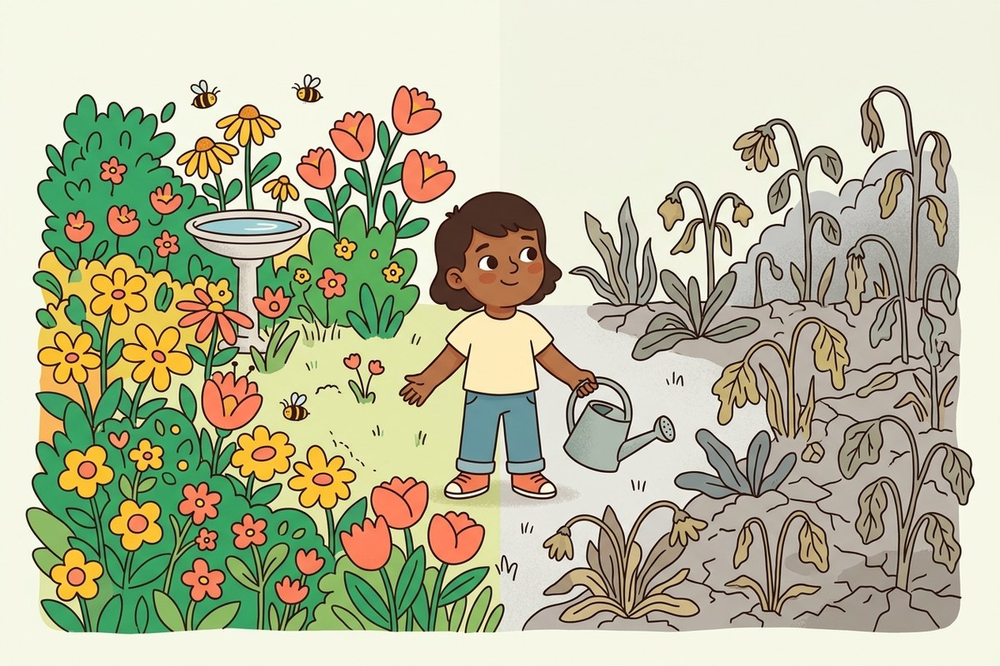

80 jaar geleden…
Après une grande guerre, tout le monde voulait fabriquer plus, plus vite.
Les usines se sont mises à tourner jour et nuit. On a fabriqué des voitures, des jouets, des habits, des téléphones… Beaucoup plus qu'il n'en fallait. Pour ça, on a pris des arbres, du pétrole, des métaux et de l'eau dans la nature, sans toujours les remettre.
Les adultes ont alors inventé une règle : « faire attention à ne pas trop abîmer ». C'est mieux que rien. Mais faire moins de dégâts, ce n'est pas la même chose que réparer.